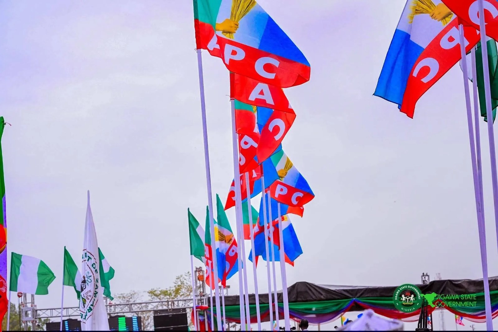

Disability groups, others demand representation, funding ahead of 2027 polls

Disability groups call for representation and funding ahead of 2027 polls
The Joint National Association of Persons with Disabilities (JONAPWD) has urged political parties and candidates seeking office in 2027 to engage people with disabilities and commit to their representation in governance. Speaking at the third Conference of Stakeholders on Disability Inclusion in Nigeria, JONAPWD President Abdullahi Usman said people with disabilities should have a role in leadership and decisions affecting their lives, not be included only as voters.
Usman said the disability community could use its collective political influence to press candidates for specific commitments. He criticised parties for treating people with disabilities as symbolic participants rather than giving them meaningful decision-making roles. He also called on federal and state governments to adequately fund the National Commission for Persons with Disabilities and similar state bodies, saying commissions cannot implement the law without resources.
Nigeria’s Discrimination Against Persons with Disabilities (Prohibition) Act was enacted in 2018 and signed into law in January 2019, establishing the national commission. At the conference, MacArthur Foundation Deputy Director Amina Salihu said legislation alone would not improve people’s daily lives without accountability and measurable implementation. She pointed to the Act’s requirement that people with disabilities make up at least five per cent of public-organisation workforces, and cited barriers such as inaccessible public buildings and the lack of sign-language interpreters in recruitment. She also urged disability organisations to ensure women, young people and other marginalised members have influence in their own decision-making.
Nigeria Civil Society Situation Room convener Yunusa Ya’u said commissions need sustained advocacy and implementation, and urged disability groups to develop an inclusion agenda for engagement with candidates. Omar Alihashi of the Canadian High Commission said political inclusion should extend from voting to contesting elections, shaping policy and holding office. ECOWAS Commission programme officer Abimbola Oyelohunnu called for investment in technology, disability data, training and early identification of children with disabilities, as well as recognition of care costs in social protection policies.
Source: Premium Times